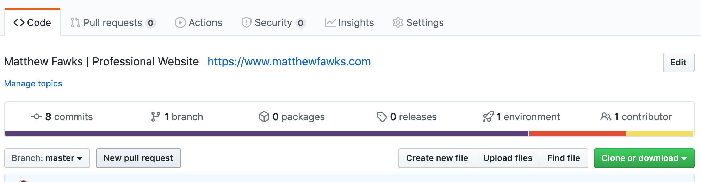

How to Build Your Own Website
Step-by-Step Guide
Step 3 - Configure Domain Name for GitHub Pages
As previously mentioned, domain names are more or less simply prettier looking ways of navigating the internet than just using IP addresses to access sites. This understood, we will need to somehow point the domain name you just purchased back to the GitHub Pages repository that will be your site that we put together in the next step. This can be done in a couple ways and would typically involve the IP address of your host's servers, but GitHub Pages makes it super simple and allows you to just resolve your new domain with your current repository URL ("YOURUSERNAME.github.io").
For more reading on the various ways of configuring a domain with in GitHub Pages, go to their help page entry on this matter.
Step 3.1 - Configure DNS in Namecheap
First, we will configure the domain in your Namecheap profile. Header over to your "Dashboard" or "Domain List" and click the "Manage" button next to your domain. You should be brought to a page that looks like this.

Click over to the "Advanced DNS" tab, which should look like this.
Under the "Host Records" section, click on the CNAME Record line and replace the parking page URL with your GitHub repository URL (remember that this is the same as the repository name). Click the green check mark to save this setting.
Click back over to the "Domain" tab that we were first on and go to the "Redirect Domain" section. This should show a source URL with the domain you just purchased and a destination URL that is formatted with the "http://" nomenclature. Click the "Add Wildcard Redirect" and then "Save All Changes".
If you want to redirect any emails sent to anything@yourdomain (for example, "me@testdomain.shop"), then go to the "Redirect Email" section and click "Add Catch-All" and put in the email you want to forward to.
It may take up to 24-48 hours for the DNS to propagate (typically dependent on how often your local Internet Service Provider (ISP) updates their DNS cache) so that using your new domain will point to your GitHub Pages repository.
Step 3.2 - Set Up GitHub Pages
Now that your domain is set up in Namecheap (we are now done using Namecheap), go back to your GitHub Pages repository and click on "Settings". It will default to the "Options" section. Scroll down to "GitHub Pages", which will look like this but with your repository name instead of mine.
Notice how is shows the current URL of your site (currently your repository name) and allows you to enter a custom domain. You can ignore the "Theme Chooser" unless you plan on using Jekyll to create your site. Enter the domain name you just purchased exactly as it is spelled into the spot. Using the above domain I purchased, I would put in "testdomain.shop". Note that it doesn't need to match your username, "matthewfawks.com" is just what I preferred my domain to be.

After it saves, make sure "Enforce HTTPS" is selected. It should say that your site is "ready to be published" at the top with your custom domain now.

For the last step in configuring your domain, you will need a CNAME file in your repository with your custom domain name in it. This may be automatically created after the above steps, but if it doesn't then go to the "Code" tab and click "Create new file".
Title the document "CNAME" exactly. Then, type your domain name in and add "www." to the front of it. For example, if I used testdomain.shop, then it should say "www.testdomain.shop".

Add a title and description to the commit, make sure it commits directly to the master branch, and click "Commit new file".
This will vary slightly based on which host you choose and where you get your domain name, but the basic idea stands. Nevertheless, your site should now be configured and ready to publish to, and you should be able to access your site from your custom domain in as little as an hour but up to 48 hours from the time you complete this step.
You are now ready move on to Step 4!